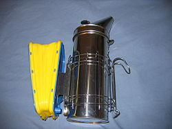

Traje de apicultor
Es una traje de protección, y por tanto las características
principales de las telas utilizadas es que son gruesas. Generalmente son de color
blanco. En la actualidad se dejan ventanas de ventilación en diversas zonas
del pecho y espalda, por medio de tejidos plásticos dobles.
Son de color blanco debido a que este color tranquiliza a las abejas.
Ahumador
Los ahumadores constan de un fuelle con el cual se insufla aire
al interior de la cámara de combustión, en la cual el apicultor quema aserrín de
madera, pasto seco, hojas secas u otra sustancia inocua. También se comercializan
sin fuelle manual que ha sido sustituido por un ventilador eléctrico que se activa
con un pulsador.

Palanca para manejo de cuadros
La palanca para el manejo de los cuadros con los panales es un
elemento muy importante en virtud que con un extremo es posible separar dos alzas,
que las abejas pegan con propóleo y con el otro extremo despegar y levantar los
cuadros con los panales de cera que también son pegados con el propóleo que las
abejas colectan. Es muy difícil sacar un cuadro del interior de un alza si no se
dispone de este elemento.
Cepillo para desabejar
Se trata de un elemento muy útil en el momento de la cosecha de
los cuadros de miel, en virtud que con él podemos barrer todas las abejas adheridas
al panal, enviándolas al interior de la colmena. De esta manera no trasladamos abejas
a la sala de extracción de miel. El cepillado siempre produce agresividad de las
abejas que barre siendo recomendable que esté mojado con agua para calmarlas.
Cera estampada
La cera estampada es una lámina de cera de 2 o 3 mm de espesor, en
la cual por medio de maquinaria especializada están impresos los hexágonos a partir de
los cuales la abeja construirá las celdas que utilizará para cría o para depósito de
miel y polen.
¿Quienes somos?
Somos una sociedad mielera comprometida con nuestro trabajo
y el buen cuidado de las abejas
Donde conseguir miel?
Nosotros le ofrecemos una variedad de mieles,
Puedes contactarnos al numero xxx-xxx-xxx.
Información de la pagina
Esta pagina fue diseñada y elaborada por Ricardo Duque